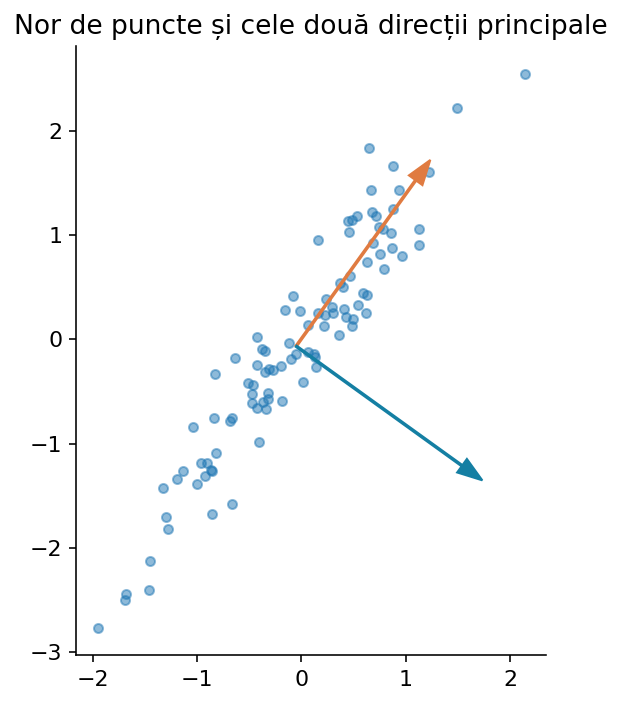
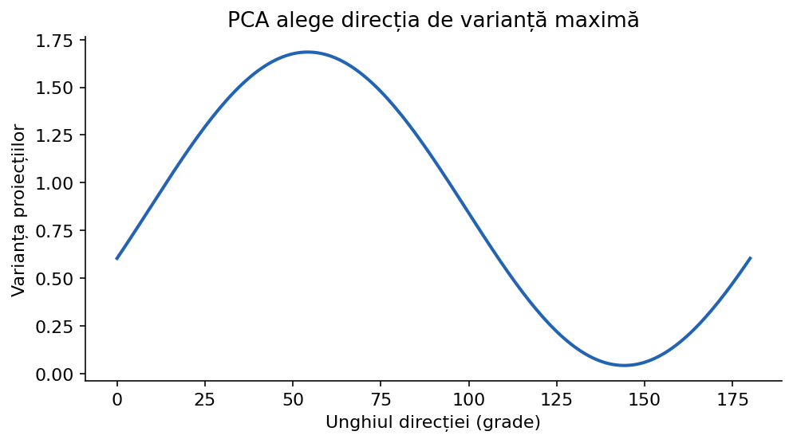
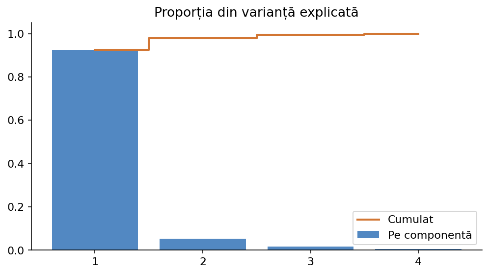
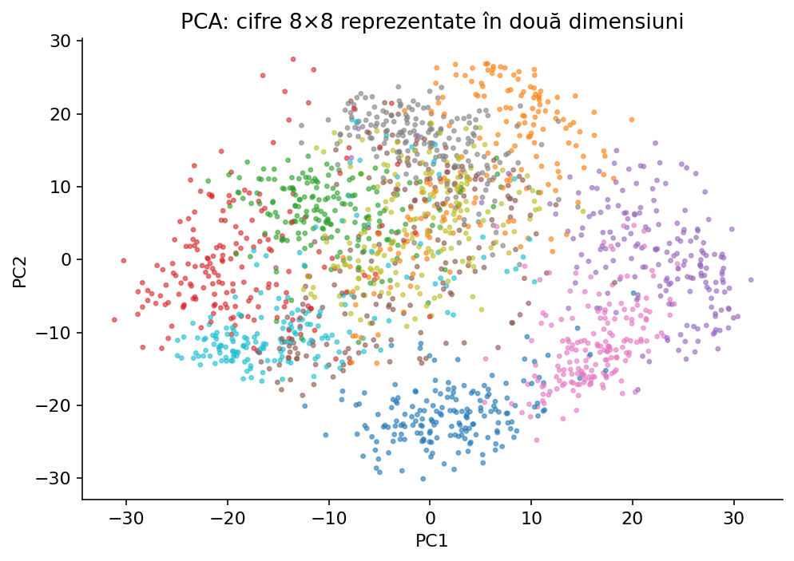

Explorăm cum un nor de puncte poate fi privit dintr-o direcție mai informativă: centru, dispersie, direcție de variație maximă, proiecție și reconstrucție, apoi utilizarea corectă în scikit-learn.
Deschide laboratorul pe tot ecranul ↗Un exemplu de IA poate avea sute sau mii de caracteristici: valori ale pixelilor, indicatori statistici sau rezultate ale unor senzori. Unele transmit informații apropiate. Pentru vizualizare vrem adesea două axe, iar pentru preprocesare vrem un număr mai mic de dimensiuni.
PCA caută direcții noi — combinații liniare ale caracteristicilor existente — pe care observațiile au variație cât mai mare. Nu alegem pur și simplu două coloane existente, ci construim axe noi. Nu sunt folosite etichete de clasă la calculul componentelor.

Imaginează-ți un nor alungit de puncte. Dacă îl privești dintr-o direcție perpendiculară pe direcția sa lungă, punctele par aproape suprapuse. Dacă proiectezi punctele pe direcția lungă, diferențele dintre ele sunt mult mai vizibile.
Pentru un vector centrat x și o direcție unitară u, coordonata proiectată este z = x·u = x₁u₁ + x₂u₂. Punctul reconstituit pe dreaptă este z·u (la care adăugăm media inițială). În laborator se vede atât proiecția, cât și distanța pierdută prin reducerea la o singură dimensiune.
import math x = (3.0, 1.0) u = (math.sqrt(2)/2, math.sqrt(2)/2) z = x[0] * u[0] + x[1] * u[1] proiectat = (z * u[0], z * u[1]) print(round(z, 3), tuple(round(v, 3) for v in proiectat))
Înainte de a căuta direcția principală, scădem media fiecărei coloane. Pentru punctele (1,1),(2,2),(3,3), media este (2,2), iar datele centrate devin (−1,−1),(0,0),(1,1).
PCA din scikit-learn centrează automat datele, dar nu le împarte automat la deviația standard. Prin urmare, dacă o caracteristică este în metri și alta în milimetri, scara poate schimba dramatic componentele. Alegerea unei standardizări trebuie justificată.
X = [[1, 1], [2, 2], [3, 3]] medie = [sum(p[j] for p in X)/len(X) for j in range(2)] centrat = [[p[j] - medie[j] for j in range(2)] for p in X] print('medie:', medie) print('X centrat:', centrat)
Covarianța arată în ce măsură două caracteristici se modifică împreună. Dacă ambele tind să crească simultan, covarianța este pozitivă; dacă una crește când cealaltă scade, este negativă. Pentru date centrate, cov(X₁,X₂)=Σᵢ xᵢ₁xᵢ₂/(n−1).
Matricea 2×2 a covarianțelor este [[var(X₁),cov(X₁,X₂)],[cov(X₁,X₂),var(X₂)]]. Matricea este simetrică. Elementele diagonale descriu dispersia pe axele inițiale; restul descriu dependența liniară dintre caracteristici.
X = [[1, 1], [2, 2], [3, 3]] medie = [sum(row[j] for row in X) / len(X) for j in range(2)] Z = [[row[j]-medie[j] for j in range(2)] for row in X] cov = [[sum(r[i]*r[j] for r in Z)/(len(X)-1) for j in range(2)] for i in range(2)] print(cov) # [[1.0, 1.0], [1.0, 1.0]]
Direcția u are lungime 1, pentru a nu putea crește varianța doar prin multiplicarea sa cu un număr mare. Varianța proiecțiilor este uᵀSu, unde S este matricea de covarianță. Căutăm direcția ce maximizează această cantitate.
Pentru cazul 2D, o direcție u=(cos θ, sin θ) poate fi încercată pentru unghiuri diferite. În laborator poți deplasa un slider și vezi cum varianța proiecțiilor crește până la direcția optimă. Direcția perpendiculară reprezintă a doua componentă.

Pentru o matrice de covarianță S, un vector propriu u este o direcție pentru care Su=λu. Matricea nu schimbă direcția vectorului, doar îi multiplică lungimea cu λ. În PCA, vectorii proprii ai lui S sunt direcții principale, iar valorile proprii indică varianța pe acele direcții.
Pentru S=[[1,1],[1,1]], direcția (1,1)/√2 are λ=2, iar direcția (1,−1)/√2 are λ=0. A doua direcție nu conține variație pentru acest set: toate punctele sunt pe aceeași dreaptă.
import numpy as np S = np.array([[1., 1.], [1., 1.]]) valori, vectori = np.linalg.eigh(S) ordine = np.argsort(valori)[::-1] print('Valori proprii:', valori[ordine]) print('Direcția principală:', vectori[:, ordine[0]])
Fie λ₁≥λ₂≥… valorile proprii. Proporția de variație explicată de componenta j este λⱼ/(λ₁+…+λd). Dacă prima componentă explică 85% și a doua 10%, primele două explică împreună 95%. Nu înseamnă că un clasificator păstrează garantat 95% din performanță.
În sklearn explained_variance_ratio_ oferă proporțiile. n_components=0.95 poate păstra automat suficiente componente pentru cel puțin 95% din varianță dacă alegem un solver compatibil (de exemplu svd_solver="full"). Pentru un grafic 2D folosim explicit n_components=2.

from sklearn.decomposition import PCA from sklearn.datasets import load_iris X = load_iris().data pca = PCA(n_components=0.95, svd_solver='full') Z = pca.fit_transform(X) print('dimensiuni:', X.shape, '→', Z.shape) print('varianță reținută:', pca.explained_variance_ratio_.sum())
Odată cunoscute direcțiile principale, transformăm observațiile prin zᵢ=(xᵢ−μ)·u pentru o componentă sau Z=(X−μ)W pentru mai multe. Ca să revenim în spațiul inițial, reconstruim aproximativ X̂=ZWᵀ+μ, dacă W conține direcții ortonormate.
Cu mai puține componente decât caracteristici, pierdem informație. Eroarea de reconstrucție este suma pătratelor distanțelor dintre date și aproximarea lor. PCA alege subspațiul liniar de dimensiune k care minimizează această eroare (în sensul pătratelor).
from sklearn.decomposition import PCA import numpy as np X = np.array([[0.,0.], [1.,1.1], [2.,2.0], [3.,3.0]]) pca = PCA(n_components=1) Z = pca.fit_transform(X) X_aprox = pca.inverse_transform(Z) print('coordonatele 1D:', Z.ravel()) print('eroare pătratică:', ((X-X_aprox)**2).sum())
Pentru două caracteristici există o formulă simplă pentru unghiul direcției principale: θ = 1/2 · atan2(2·cov_xy, var_x−var_y). Ea dă una dintre direcțiile proprii. Verificăm care dintre cele două direcții perpendiculare are variația mai mare.
Exemplul de mai jos nu folosește NumPy sau biblioteci de machine learning. Pentru mai multe caracteristici, calculul SVD dintr-o bibliotecă numerică este mai robust, dar secvența conceptuală este aceeași: centrare → covarianță → direcții → proiecție.
from math import atan2, cos, sin, pi def pca_2d_simplu(puncte): n = len(puncte) media_x = sum(p[0] for p in puncte) / n media_y = sum(p[1] for p in puncte) / n x = [p[0] - media_x for p in puncte] y = [p[1] - media_y for p in puncte] vx = sum(a*a for a in x) / (n-1) vy = sum(b*b for b in y) / (n-1) cxy = sum(a*b for a,b in zip(x,y)) / (n-1) theta = 0.5 * atan2(2*cxy, vx-vy) directie = (cos(theta), sin(theta)) perpendiculara = (-sin(theta), cos(theta)) def varianta(u): return sum((a*u[0]+b*u[1])**2 for a,b in zip(x,y)) if varianta(perpendiculara) > varianta(directie): directie = perpendiculara z = [a*directie[0]+b*directie[1] for a,b in zip(x,y)] return directie, z print(pca_2d_simplu([[1,1],[2,2],[3,3],[4,4]]))
Dacă variabilele au unități diferite, folosește deseori StandardScaler înaintea PCA. În funcție de semnificația caracteristicilor, uneori este corect să păstrezi scara fizică originală. Standardizarea nu este o regulă oarbă, ci o decizie care se documentează.
Pentru un concurs cu date train/validare/test, atât scalarea cât și PCA trebuie ajustate exclusiv pe train. Folosește Pipeline(StandardScaler(), PCA(...), estimator) pentru ca orice fold de cross-validation să-și calculeze propriile medii și componente. PCA nu trebuie aplicat o dată peste toate datele înainte de validare.
from sklearn.pipeline import Pipeline from sklearn.preprocessing import StandardScaler from sklearn.decomposition import PCA from sklearn.linear_model import LogisticRegression model = Pipeline([ ('scaler', StandardScaler()), ('pca', PCA(n_components=2)), ('clf', LogisticRegression(max_iter=1000)) ]) # Exemplu independent cu iris from sklearn.datasets import load_iris from sklearn.model_selection import cross_val_score X, y = load_iris(return_X_y=True) print(cross_val_score(model, X, y, cv=5).mean())
Componentele PCA au varianțe diferite: prima păstrează de regulă cea mai mare variație. Cu whiten=True, rezultatele sunt rescalate astfel încât fiecare componentă păstrată să aibă varianță apropiată de 1 și să fie necorelată cu celelalte.
Whitening poate ajuta unele modele care tratează uniform toate direcțiile, dar îndepărtează informația despre amplitudinea relativă a variației și poate amplifica zgomotul pe componente cu varianță mică. Nu înseamnă „rezultate mai bune în mod garantat”.
import numpy as np from sklearn.decomposition import PCA X = np.array([[1.,1.], [2.,2.5], [3.,2.8], [4.,4.6], [5.,4.9]]) Z = PCA(n_components=2, whiten=True).fit_transform(X) print(np.var(Z, axis=0, ddof=1))
n_components: număr întreg de componente, proporție de varianță dorită între 0 și 1 (cu solver adecvat), None sau opțiuni precum mle; svd_solver: auto, full, covariance_eigh, randomized, arpack, cu compromisuri de memorie, timp și stabilitate numerică.
whiten: rescalarea componentelor la varianță unitară. random_state: important pentru algoritmi aleatori precum randomized, nu pentru orice solver. tol: toleranță pentru arpack. iterated_power, n_oversamples și power_iteration_normalizer influențează aproximația aleatoare. copy controlează copiile datelor.
components_: direcțiile în spațiul inițial. mean_: media învățată. explained_variance_ și explained_variance_ratio_: varianța pe componente și proporțiile. singular_values_: valorile singulare; n_components_: numărul efectiv păstrat.
from sklearn.datasets import load_iris from sklearn.decomposition import PCA X = load_iris().data pca = PCA(n_components=2, svd_solver='full', whiten=False) Z = pca.fit_transform(X) print('Componente:', pca.components_.shape) print('Media:', pca.mean_) print('Variație:', pca.explained_variance_ratio_) print('Proiecție:', Z[:2])
Un set de imagini 8×8 poate fi reprezentat prin 64 de valori numerice per imagine. Prin PCA putem reduce aceste 64 de caracteristici la câteva zeci sau putem obține două coordonate pentru vizualizare.
Atenție: primele două componente explică o parte din variația pixelilor, dar nu neapărat diferențele dintre cifre. Un grafic în care categoriile se suprapun nu demonstrează imposibilitatea clasificării în spațiul original.

from sklearn.datasets import load_digits from sklearn.preprocessing import StandardScaler from sklearn.decomposition import PCA X, y = load_digits(return_X_y=True) Z = PCA(n_components=2, random_state=0).fit_transform(X) print(X.shape, Z.shape, 'Etichete numai pentru culoarea graficului:', len(y))
PCA caută variație liniară; nu desfășoară automat structuri curbate, iar componentele cu variație mică pot conține semnale importante pentru ținta unei clasificări. Mai mult, direcțiile proprii pot avea semnul inversat fără să se schimbe interpretarea matematică.
PCA nu selectează caracteristicile inițiale, ci construiește combinații liniare. Nu înlocuiește curățarea datelor, validarea corectă sau alegerea metricii. Pentru vizualizarea vecinătăților într-un spațiu complex, t-SNE și UMAP pot aduce perspective diferite, dar au și propriile limite.
PCA este o transformare liniară fără etichete. Direcțiile alese maximizează varianța; acestea nu garantează păstrarea informației relevante pentru clasificare.